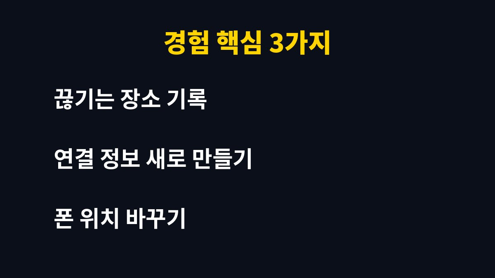
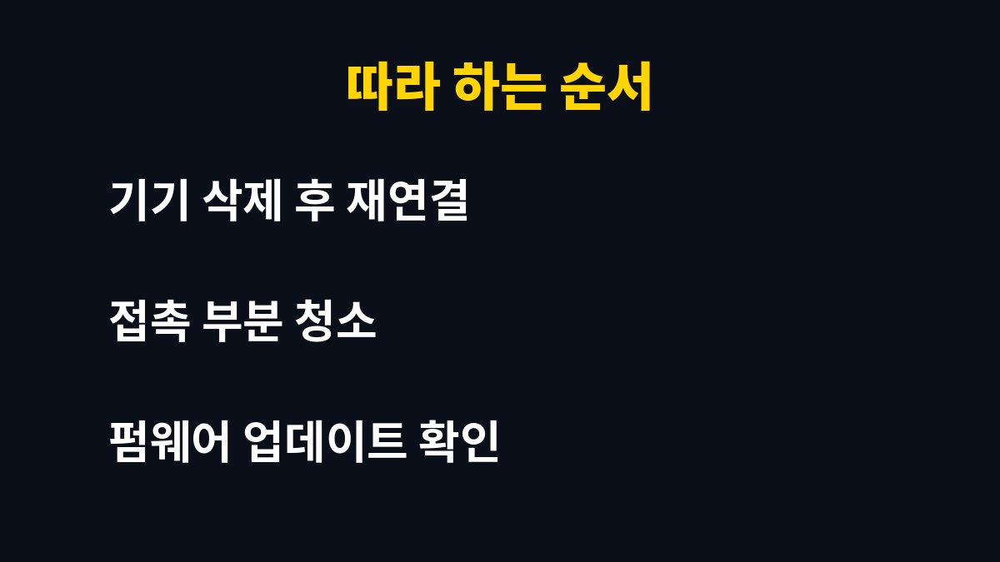

이 글은 블루투스 이어폰이 통화나 영상 시청 도중 자꾸 끊겨서 새 제품을 사야 하나 고민하는 사람을 위해 쓴 글이다.
배송 업체와 통화할 일이 많은 나도 이어폰이 끊겨 말이 안 들린 적이 여러 번 있다.
고장이라고 단정하기 전에 내가 차례대로 점검해 본 방법을 적었다.
이어폰은 매일 출퇴근과 배송 확인 전화에 쓰는 물건이라서 한 번 끊기기 시작하면 하루 전체가 불편해진다.
그래서 새로 사기 전에 비용이 들지 않는 방법부터 확인하는 것이 좋다고 생각했다.
특별한 도구 없이 스마트폰 설정과 마른 천만 있으면 되는 방법들이라 누구나 바로 해 볼 수 있다.
제품마다 메뉴 이름은 조금 다를 수 있지만 큰 흐름은 비슷하므로 순서를 참고하면 된다.
하필 거래처 전화를 받는 중이나 아이와 영상을 볼 때 소리가 끊기면 순간적으로 짜증이 난다.
나는 처음에 이어폰이 낡았다고 생각하고 새 제품을 알아보기 시작했다.
그런데 확인해 보니 기기 문제가 아니라 연결 설정이나 주변 환경 때문인 경우도 많았다.
끊김의 원인은 크게 이어폰 자체, 스마트폰 설정, 주변 전파 환경으로 나눌 수 있다.
어디가 문제인지 모른 채 새로 사면 같은 증상이 반복될 수 있다.
그래서 비용이 들지 않는 점검부터 하나씩 해 보기로 했다.
며칠 동안 끊기는 장소와 상황을 메모해 보았다.
사람이 많은 지하철이나 공유기 근처에서 유독 심했고, 집 안 조용한 곳에서는 괜찮았다.
이 경우 이어폰이 아니라 주변 전파 간섭이 원인일 가능성이 있다고 판단했다.

| 증상 | 의심되는 원인 | 먼저 해볼 일 |
|---|---|---|
| 어디서나 끊긴다 | 연결 정보 꼬임 | 기기 삭제 후 다시 연결 |
| 특정 장소에서만 끊긴다 | 주변 전파 간섭 | 위치와 폰 보관 방향 바꾸기 |
| 한쪽만 끊긴다 | 이어폰 접촉·충전 문제 | 이어폰과 케이스 청소 |
| 업데이트 후 끊긴다 | 펌웨어·앱 버전 | 전용 앱에서 업데이트 확인 |
표처럼 증상을 먼저 나누면 불필요한 시도를 줄일 수 있다.
나는 이 표를 기준으로 가장 쉬운 것부터 순서대로 확인했다.
스마트폰의 블루투스 설정에서 이어폰을 목록에서 삭제하고 이어폰을 케이스에 넣었다가 다시 페어링했다.
이것만으로도 연결 정보가 새로 만들어져 끊김이 눈에 띄게 줄었다.
그다음 이어폰 접촉 부분과 케이스 안쪽을 마른 천으로 닦아 주었다.
스마트폰을 바지 뒷주머니가 아니라 이어폰과 가까운 앞쪽 주머니나 가방 앞쪽에 두었다.
몸이 신호를 가리는 경우가 있어서 위치만 바꿔도 달라질 수 있다.
마지막으로 제조사 전용 앱이 있으면 펌웨어 업데이트가 있는지 확인했다.

1. 끊기는 장소와 상황을 며칠간 메모해 패턴을 확인한다.
2. 스마트폰 블루투스 목록에서 이어폰을 삭제한 뒤 다시 페어링한다.
3. 이어폰과 충전 케이스의 접촉 부분을 마른 천으로 닦는다.
4. 스마트폰을 이어폰과 가까운 위치에 두고 증상이 달라지는지 본다.
5. 전용 앱에서 펌웨어 업데이트를 확인하고 그래도 같으면 제조사 서비스센터에 문의한다.
나는 이 점검만으로 새 이어폰을 사지 않고 지금까지 잘 쓰고 있다.
모든 경우에 해결되는 것은 아니지만 비용 없이 해볼 수 있는 일이 꽤 많다는 점은 분명하다.
그래도 증상이 계속되면 그때 제조사 안내에 따라 점검을 받는 것이 좋다.
구매를 결정하기 전에 원인부터 나누어 보는 습관이 도움이 되었다.
이어폰은 작은 기기라 증상이 같아도 원인이 다양하므로 한 가지씩 바꿔 가며 확인하는 편이 정확하다.
한 번에 여러 가지를 바꾸면 무엇이 효과가 있었는지 알 수 없게 되어서 나는 항상 하나씩만 바꿔 보았다.
이 방식은 다른 전자기기의 연결 문제를 점검할 때도 그대로 쓸 수 있었다.
함께 읽으면 좋은 글: 와이파이 느릴 때 공유기 점검 5단계, 재택 업무하던 내가 먼저 해본 순서 / 갤럭시 업데이트 후 설정 5가지, 폰이 달라졌다 느낀 내가 먼저 확인한 곳
※ 2026년 기준 개인 사용 경험과 공식 발표를 바탕으로 정리한 글이며, 기기·앱 버전에 따라 메뉴 이름이 다를 수 있다.